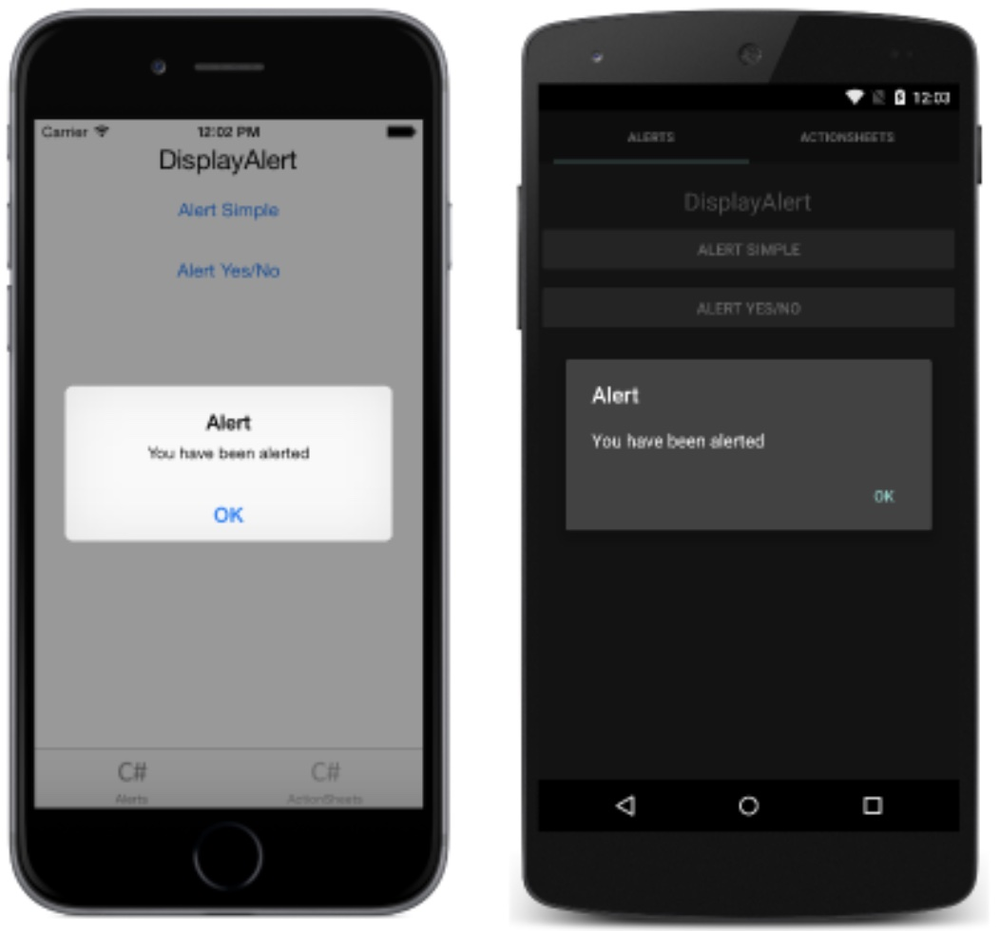
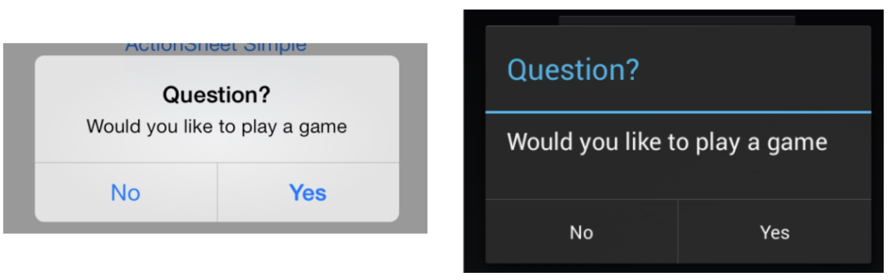
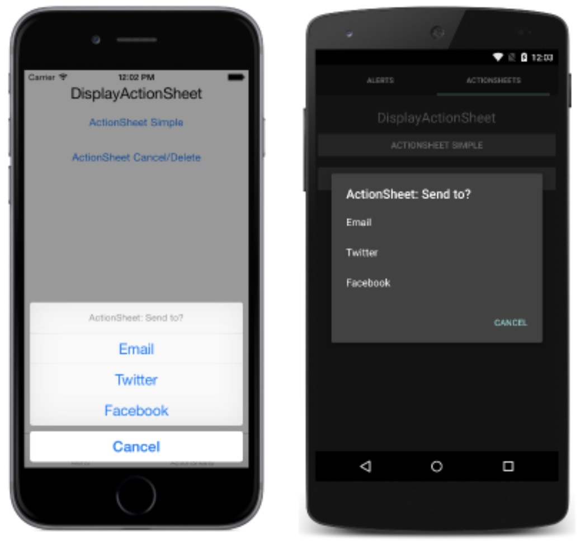

Mobile App Entwicklung
Lektion 4
Popupelemente (Dialogs) und Steuerelemente
Rückblick
Übersicht Lektionen
- Vorstellung, Einführung und Framework-Evaluation
- Evaluation, Selektion und Aufsetzen eines Frameworks
- IOC und Testing
- Popupelementen (Dialogen) und Steuerelemente
- LK1; MVVM, Bindings, Controls
- Benachrichtigungen & Biometrie
- Datenbanken (SQLite); HTTP Client
- LK2; Hybrid-Apps
- MLZ Präsentationen; Themen nach Wahl
LZ1
- Statt eine Prüfung macht ihr ein kleines Projekt
- Maui App erstellen
- Auf GitHub und Verzeichnis LZ1 hochladen
- Mindestens ein Service wird eingesetzt
- Dieser Service wird getestet

Popupelementen
Popupelementen
- Verschiedene Variante probieren
Pageals Command-Parameter mitgeben

Dialogs (Pop-Ups)
DisplayAlert("", "")auf irgendeine Seite aufrufen- "Fragen" können mit overloads gestellt werden
awaitdas Resultat- "Action Sheets" für Verhalten wie “DropDown” einsetzen
Dialogs: API
DisplayAlert(string title, string message, string cancel);
DisplayAlert(string title, string message,
string accept, string cancel);
DisplayActionSheet(string title, string cancel,
string destruction, params string[] buttons);
Nachricht
Frage Stellen
Frage mit Auswahl
Dialogs: C# Code
DeleteItemCommand = new Command<Page>(async page =>
{
var result = await page.DisplayAlert("Confirm", "Are you sure?", "YES", "NO");
if (result)
{
Items.Remove(SelectedItem);
}
});
async void OnActionSheetSimpleClicked(object sender, EventArgs e)
{
string action = await DisplayActionSheet("ActionSheet: Send to?", "Cancel",
null, "Email", "Twitter", "Facebook");
Debug.WriteLine("Action: " + action);
}
Dialogs: XAML Code
<?xml version="1.0" encoding="utf-8"?>
<ContentPage
xmlns="http://xamarin.com/schemas/2014/forms"
xmlns:x="http://schemas.microsoft.com/winfx/2009/xaml"
x:Class="Todo.Views.TodoListPage"
xmlns:local="clr-namespace:Todo.Converters;assembly:Todo"
xmlns:viewModels="clr-namespace:Todo.ViewModels;assembly:Todo"
x:DataType="viewModels:TodoListViewModel"
x:Name="Page">
<ContentPage.Content>
<Button Text="Delete" WidthRequest="100" Margin="20,0,0,0"
Command="{Binding DeleteItemCommand}" CommandParameter="{x:Reference Page}" />
</ContentPage.Content>
</ContentPage>
Übungen
Ein Dialog in der eigenen App einbauen

Styles
Styles
- Man kann mit XAML oder CSS stylen
- Wir setzen den Fokus auf XAML
- Online Doku durchsuchen, um herauszufinden welche Properties von welchen Controls unterstützt sind
Style Hierarchie
- Inline Styles: Direkt auf einem Element gesetzt (wie "inline styles" in HTML)
- Explicit Styles: Auf dem
<Style>Element eines Elements gesetzt - Implicit Styles: Den
TargetTypebestimmt den geerbten Style
Inline Styles: Beispiel
<Label
Grid.Column=“2"
Text="X"
TextColor=“Red" />
Explicit Style: Beispiel
<ContentPage
xmlns="http://xamarin.com/schemas/2014/forms"
xmlns:x="http://schemas.microsoft.com/winfx/2009/xaml"
x:Class="Todo.Views.TodoListPage"
Title="List">
<ContentPage.Style>
<Style>
<Setter
Property="BackgroundColor"
Value="Black" />
</Style>
</ContentPage.Style>
<!-- other content -->
<ContentPage/>
Styling im App
ResourceDictionary aufsetzen:
<Application
xmlns="http://xamarin.com/schemas/2014/forms"
xmlns:x="http://schemas.microsoft.com/winfx/2009/xaml"
x:Class="Todo.App">
<Application.Resources>
<ResourceDictionary>
<Color x:Key="Background">Black</Color>
<Style x:Key=“ContentPageStyle" TargetType="ContentPage">
<Setter Property="BackgroundColor" Value="{StaticResource Background}" />
</Style>
</ResourceDictionary>
</Application.Resources>
</Application>
App Styles einsetzen
ContentPageStyle aus dem App ResourceDictionary referenzieren:
<ContentPage xmlns="http://xamarin.com/schemas/2014/forms"
xmlns:x="http://schemas.microsoft.com/winfx/2009/xaml"
x:Class="Todo.Views.TodoListPage"
x:Name="Page"
Title="List"
Style="{StaticResource ContentPageStyle}">
Implicit Styling: Beispiel
Style mit einem TargetType assoziieren:
<Style TargetType="Button">
<Setter Property="BackgroundColor" Value="#3541a0" />
<Setter Property="TextColor" Value="White" />
<Setter Property="HeightRequest" Value="50" />
</Style>
Styling: Button
- BackgroundColor
- BorderRadius
- BorderWidth
- BorderColor
- TextColor
Styling: Entry
- TextColor
- FontSize
- FontFamily
- PlaceholderColor
Styling: Picker
- TextColor
- FontSize
- FontFamily
- TitleColor
Styling: Label
- TextColor
- BackgroundColor
- FontSize
- FontFamily
- TextDecorations
Styling: Weitere Ressourcen
| Triggers | Auf Events in XAML reagieren |
| Custom Renderer | Das Aussehen eines Native-Controls komplett anpassen |
| Effects | Plattformspezifische Anpassungen ohne Renderer |
Fragen?

Styles
- Inline Styles
- Explicit Styling
- Implicit Styling
Übungen
Eure Apps ein bisschen stylen
Benachrichtigungen
- Unterscheiden sich auf iOS und Android
- Beide unterstützen Remote (oder Push) Notifications
- Dies ist ein perfektes Einsatzgebiet für IoC
Lokale Benachrichtigungen
- Berechtigungen zuerst abfragen (nur für iOS)
- Notification channel aussetzen (nur für Android)
- Nachricht mit Details abfüllen (Text, Priority, usw.)
- Nachricht für die Auslieferung freigeben (schedule)
Android
Vor dem wir beginnen, müssen wir ein bisschen mehr über Android lernen.
Android: Basics
- Activities sind die Controllers im MVC
Xamarin.FormsApps haben normalerweise nur dasMainActivity- Xamarin generiert ein gross Teil dieses Code (scaffolding)
- Inclusive das Code womit
Xamarin.Formsselbst gestartet wird (bootstrapping)
Android Lifecycle
Android Manifest
- In die Datei
AndroidManifest.xmldefiniert - Beinhaltet die Metadaten für die Applikation
- Package Name
- Minimum SDK Level
- Geforderte Berechtigungen
- Intent filters
Android Intents
- Sind Objekten womit eine Aktion oder Benachrichtigung gestartet werden kann
- Benutzt um zwischen Activities zu wechseln
- Wir werden eine Benachrichtigung mit einem Intent bestücken, um das Bearbeiten der Nachricht durch die App zu beeinflussen
- Ein Intent kann zusätzlichen Daten beinhalten
Notification Channels
- Eine App muss zumindest ein Notification Channel definieren, um Nachrichten zu bekommen
- Ein Notification Channel beinhaltet
- Eine Priorität
- Eine Beschreibung
- Die können vom Benutzer im Betriebssystem verwaltet werden
Android Settings
Channel Erstellen
Ein Channel kann in einem Service definiert werden.
public class NotificationService : INotificationService {
private const string ChannelId = "Channel ID";
private const string ChannelName = "TODO Channel";
private const string ChannelDescription = "Messages for the TODO App";
public void CreateNotificationChannel() {
var channel = new NotificationChannel(ChannelId, ChannelName, NotificationImportance.Default) {
Description = ChannelDescription
};
var notificationManager = (NotificationManager)MainActivity.Activity.GetSystemService(Context.NotificationService);
notificationManager.CreateNotificationChannel(channel);
}
}
Notification Erstellen
var builder = new NotificationCompat.Builder(MainActivity.Activity, ChannelId)
.SetContentTitle(title)
.SetContentText(description)
.SetSmallIcon(Resource.Drawable.notify_panel_notification_icon_bg);
var notification = builder.Build();
Notification Layout
Notification Anzeigen
Benachrichtigungen werden mit demselben NotificationService gesendet als für die Registrierung benutzt wurde.
var a = MainActivity.Activity;
var svc = a.GetSystemService(Context.NotificationService);
var notificationManager = (NotificationManager)svc;
const int notificationId = 0;
notificationManager.Notify(notificationId, notification);
Fragen?
Lokale Benachrichtigungen
- Notification Channel registrieren
- Lokale Nachricht senden und empfangen
Übungen
- Notification Channel registrieren
- Lokale Nachricht senden und empfangen
Push Notifications
Push Notifications
- Wir schauen das generelle Setup an
- Wir schauen das Backend für den Push-Dienst nicht in Detail an
- Wir setzen Firebase direkt ein
- Firebase ist das offizielle Android/Google Push-Notification Provider
Firebase Architektur

Packages einziehen
Folgende NuGet Packages im Android Projekt installieren
Xamarin.GooglePlayServices.BaseXamarin.Firebase.MessagingXamarin.Google.Dagger
Firebase aufsetzen
- https://console.firebase.google.com öffnen
- Einloggen oder Konto erstellen
- Projekt erstellen
- Google Analytics müsst ihr nicht einschalten
- Android App mit dem Package-Namen aus der
AndroidManifest.xmleinfügen google-services.jsonherunterladen- Diese Datei im Android-Projekt einfügen
- Build Action für diese Datei auf
GoogleServicesJsonsetzen
App aufsetzen
Im AndroidManifest.xml innerhalb des <application> Tags die folgenden Zeilen einfügen
<receiver android:name="com.google.firebase.iid.FirebaseInstanceIdInternalReceiver" android:exported="false" />
<receiver android:name="com.google.firebase.iid.FirebaseInstanceIdReceiver" android:exported="true" android:permission="com.google.android.c2dm.permission.SEND">
<intent-filter>
<action android:name="com.google.android.c2dm.intent.RECEIVE" />
<action android:name="com.google.android.c2dm.intent.REGISTRATION" />
<category android:name="${applicationId}" />
</intent-filter>
</receiver>
Sicherstellen, dass ein Notification Channel definiert ist, sonst kommen keine Nachrichten an.
FirebaseService
Im Android Projekt FirebaseService definieren, um das Token für das Gerät abzuhandeln
[Service]
[IntentFilter(new[] { "com.google.firebase.MESSAGING_EVENT" })]
[IntentFilter(new[] { "com.google.firebase.INSTANCE_ID_EVENT" })]
public class FirebaseService : FirebaseMessagingService {
public override void OnNewToken(string token) {
Log.Debug(nameof(FirebaseService), "FCM token: " + token);
SendRegistrationToServer(token);
DependencyService.Get<INotificationService>().CreateNotificationChannel();
}
public void SendRegistrationToServer(string token) {
// Send the token to the server, if desired
// Using this, you can send notifications to specific recipients
}
}
OnMessageReceived()
FirebaseService erweitern, um Nachrichten abzuhandeln, wenn die App im Vordergrund ist
[Service]
[IntentFilter(new[] { "com.google.firebase.MESSAGING_EVENT" })]
[IntentFilter(new[] { "com.google.firebase.INSTANCE_ID_EVENT" })]
public class FirebaseService : FirebaseMessagingService {
// Neu
public override void OnMessageReceived(RemoteMessage message) {
Log.Debug(nameof(FirebaseService), $"Received message. {message}");
DependencyService.Get<INotificationService>().ShowNotification(message.From, message.GetNotification().Body);
}
}
Nachricht Testen
- App starten und Token aus dem Output lesen (oder Breakpoint in
FirebaseServicesetzen) - App schliessen oder im Hintergrund setzen
- Firebase Console öffnen
- Links auf dem Menü "Engage" klicken
- Sub-Menü “Cloud Messaging” wählen
- Neue Nachricht mit einem Titel und einer Beschreibung kreieren
- “Testnachricht senden” klicken
- Token eingeben und “Test” klicken
Fragen?
Push Notifications
- App für Push Notifications einrichten
Übungen
- App für Push Notifications einrichten
"Taps" und App-spezifische Daten
App öffnen
Mit einem Intent kann die App im Vordergrund gebracht oder gestartet werden
var notificationIntent = MainActivity.Activity.PackageManager.GetLaunchIntentForPackage(MainActivity.Activity.PackageName);
notificationIntent.SetFlags(ActivityFlags.SingleTop);
notificationIntent.PutExtra("FromNotification", true);
var pendingIntent = PendingIntent.GetActivity(MainActivity.Activity,
0, notificationIntent, PendingIntentFlags.UpdateCurrent);
var builder = new NotificationCompat.Builder(MainActivity.Activity, channelId)
.SetContentTitle(title)
.SetContentText(description)
.SetContentIntent(pendingIntent) // <== neue Zeile
.SetSmallIcon(Resource.Drawable.ic_app);
MainActivity anpassen
Intent im MainActivity abfangen und abhandeln
protected override void OnNewIntent(Intent intent) {
// Do something with the data you pass from the notification.
var extra = intent.GetBooleanExtra("FromNotification", false);
if (extra) {
// Do something with it
}
base.OnNewIntent(intent);
}
protected override void OnCreate(Bundle savedInstanceState) {
// Forms startup here...
// Check if our notification was clicked while the app was closed.
var extra = Intent.GetBooleanExtra("FromNotification", false);
if (extra) {
// Do something with it
}
}
Werten auslesen
Key/Value Paare können mitgeschickt werden, die an die App weitergeleitet werden
protected override void OnCreate(Bundle savedInstanceState) {
if (!Forms.IsInitialized) {
// Forms init code
}
else {
// We need to make sure we call the base method in any case
base.OnCreate(savedInstanceState);
}
// Check if we've some extras because we've been started by a notification tap.
if (Intent.Extras?.Get("RemoteKey") != null) {
// Let's do something with that information.
}
}
App im Vordergrund
Klicks auf Nachrichten für eine laufende App können mit folgendem Code abgehandelt werden
protected override void OnNewIntent(Intent intent)
{
// Check for key/values from notifications.
var extra = intent.GetStringExtra("FromNotification");
if (!string.IsNullOrEmpty(extra))
{
// Do something with the value.
}
base.OnNewIntent(intent);
}
Icon setzen
Im AndroidManifest.xml innerhalb des <application> Tags die folgenden Zeilen einfügen
<meta-data
android:name="com.google.firebase.messaging.default_notification_icon"
android:resource="@drawable/ic_mtrl_chip_checked_circle"
/>
Und iOS?
- Man muss ein kostenpflichtiges Apple Developer Konto haben
- APN geht im Simulator nicht; muss auf einem echten Gerät getestet werden
- Man kann FireBase und/oder Azure auch für iOS einsetzen
Wir fokussieren auf Android.
Und Senden?
- Das automatisierte Senden von Nachrichten läuft auch über das Firebase API
- Man muss ein weiteres API-Schlüssel anlegen und diverse Registrierungen machen
- So etwas ist "out of scope" für das Modul
- Siehe
Fragen?